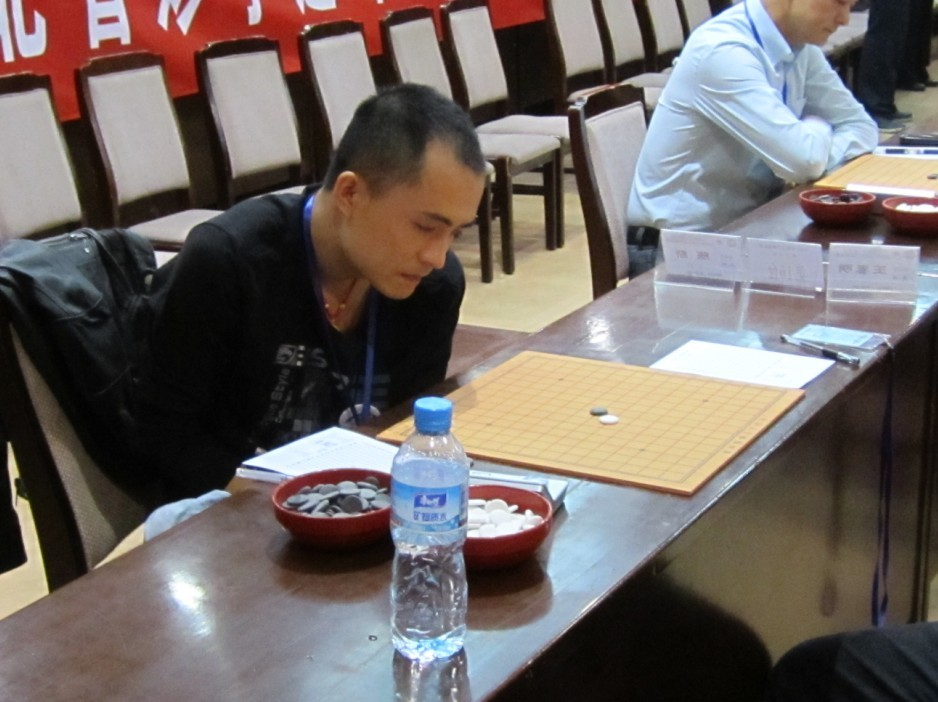

全国锦标赛总结
#1 全国锦标赛总结 作者：暴力连珠 发表时间：2010-10-9 20:57:14
一年一度的全国赛又结束了，这是我第六次参赛，最后
11
名的成绩对我这个全国赛困难户来说绝对是值得欣喜的了 ，下面简单的做一个总结。
，下面简单的做一个总结。
第一盘对王春明，没什么印象就开了个必胜来考考，结果这盘棋下的我是浑身不爽，
=======上图对应的爱五子棋谱代码如下，以便你拆解：========
h8i9h6g9f9g8g10h10h11i12i11h9j9g11f12i10j11e8j8j10k10l11f8i7f10f11f7f6i8k8l12
======================================================
这个黑7我是准备过的，黑大先手，当然并不是这个9，当我看到这个9的时候我首先确定他攻不出我拆过的那套黑棋的走法，而且我豪不犹豫的挡在了上面叫一个三三意思是要抢先手了，10手刚一落下去我就开始头皮发麻。。。
=======上图对应的爱五子棋谱代码如下，以便你拆解：========
h8i9h6g9f9g8g10h10h11i12h5
======================================================
如果这个11落下来了我就可以直接洗洗睡了 不过对手到是很配合的直接秒防了我的三三，我惊魂未定的走了这个12的无奈之举，被他13一盖我好想洗好想睡。。。14我开始装13了，大摇大摆的活了一手三后瞪了他一眼（喂。。哥们你敢防下面么？！！）他皱了皱眉头很不情愿的叹息了一声还是防在了上面的时候，我才肯定这盘棋我终于是活下来了，然后黑白互相交换了一下之后哥们终于亮剑了。。。31！！！我。。。。。。但这个31还是挺让我有感慨的，一个不知名的棋手赛前制定的方针和目标能贯彻的如此坚定，这是需要一定的勇气和实力才能完成任务，但确实黑棋一手都不攻拿着先手开始防，至少我这个水平是拿他没辙，31以后都忽略不计了，和棋
不过对手到是很配合的直接秒防了我的三三，我惊魂未定的走了这个12的无奈之举，被他13一盖我好想洗好想睡。。。14我开始装13了，大摇大摆的活了一手三后瞪了他一眼（喂。。哥们你敢防下面么？！！）他皱了皱眉头很不情愿的叹息了一声还是防在了上面的时候，我才肯定这盘棋我终于是活下来了，然后黑白互相交换了一下之后哥们终于亮剑了。。。31！！！我。。。。。。但这个31还是挺让我有感慨的，一个不知名的棋手赛前制定的方针和目标能贯彻的如此坚定，这是需要一定的勇气和实力才能完成任务，但确实黑棋一手都不攻拿着先手开始防，至少我这个水平是拿他没辙，31以后都忽略不计了，和棋
第二盘还真搞笑。。。我居然历史上第一次碰到弃权的对手了，而且还居然不是第一轮遇到的，然后休息了会第三轮的对手终于是让我能提起点兴趣来了，那就是最后的冠军高老师，但我这里比较鄙视高老师现在的棋风。。。以前我一直认为他是攻击型的棋手，所以这次选了一个给他先手的变化想让他攻几手最好把自己攻烂 但他居然也是一上来一手不攻非要等到黑棋连个二都没有的时候才开始在小局部做那种没营养的骗杀的时候我开始鄙视高老师了。。。最后的棋谱当然就是闷和了一盘大家如果有兴趣在棋谱库里可以看得到这个谱。
但他居然也是一上来一手不攻非要等到黑棋连个二都没有的时候才开始在小局部做那种没营养的骗杀的时候我开始鄙视高老师了。。。最后的棋谱当然就是闷和了一盘大家如果有兴趣在棋谱库里可以看得到这个谱。
第四轮对葛帅是我本次比赛最恶心的一盘棋。。。我瑞星执黑在白棋定式出错，走成黑棋四个眠3两个活2的时候我杀不出，最后又和了，我全国赛上以前一共和过三盘，今年一来我就把以前和的总数在前四轮一次和光了，我我我。。。
/*760*90，创建于2012-2-9*/ var cpro_id = 'u761865';
#2 Re:全国锦标赛总结 作者：极地剑客 发表时间：2010-10-10 7:22:58
恭喜风尘大师又升级了~~~~#3 Re:全国锦标赛总结 作者：雨一直下 发表时间：2010-10-10 21:47:32
前4轮全猥琐地和了，后面怎么委琐滴赢的？哈哈，快继续分解#4 Re:全国锦标赛总结 作者：极地剑客 发表时间：2010-10-10 22:10:19
看来楼上很了解风老师啊~~暴力流改萎缩流了~#5 Re:全国锦标赛总结 作者：冰雪笑醉 发表时间：2010-10-11 5:07:21
师傅你太有才了！#6 Re:全国锦标赛总结 作者：高飞 发表时间：2010-10-11 9:09:45
....居然鄙视我~~~ ,我那是稳妥 ,你设计好的,我不会自己把自己攻死,#7 Re:全国锦标赛总结 作者：炫飞冰弦 发表时间：2010-10-11 22:15:28
引用：
原文由 暴力连珠 发表于 2010-10-9 20:57:14 :今年一来我就把以前和的总数在前四轮一次和光了，我我我。。。
［此帖子已被 炫飞冰弦 在 2010-10-11 22:16:02 编辑过］
#8 Re:全国锦标赛总结 作者：炫飞兔子 发表时间：2010-10-13 10:00:07
下回是什么时候啊，几世纪啊#9 Re:全国锦标赛总结 作者：炫飞冰弦 发表时间：2010-10-19 15:34:04
附 暴力连珠版比赛照～

［ 岳麓小棋后 于 2010-10-19 17:03:24 时花20金币送鲜花一朵］
#10 Re:全国锦标赛总结 作者：老奶奶 发表时间：2010-10-20 23:52:16
风伯伯秃顶了。。。